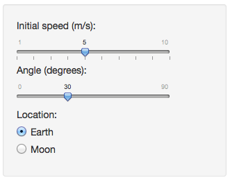
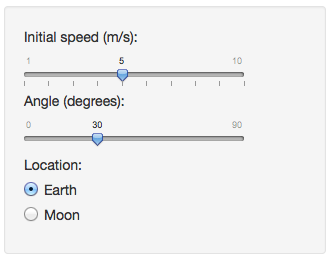

The Ball Motion app simulates a ball thrown to the air. It demonstrates how gravity and initial velocity (speed and angle) affect the trajectory of the ball.

Doroszlai, Attila
The Ball Motion app simulates a ball thrown to the air. It demonstrates how gravity and initial velocity (speed and angle) affect the trajectory of the ball.

The app draws 4 plots that dynamically adapt to user input. Example with ball thrown at 6 m/s initial speed at 42 degrees on the Earth:
Users can find out answers for the following questions and more:
Thanks to Louis A. Bloomfield's How Things Work course for the idea.
The app's source is available on github.